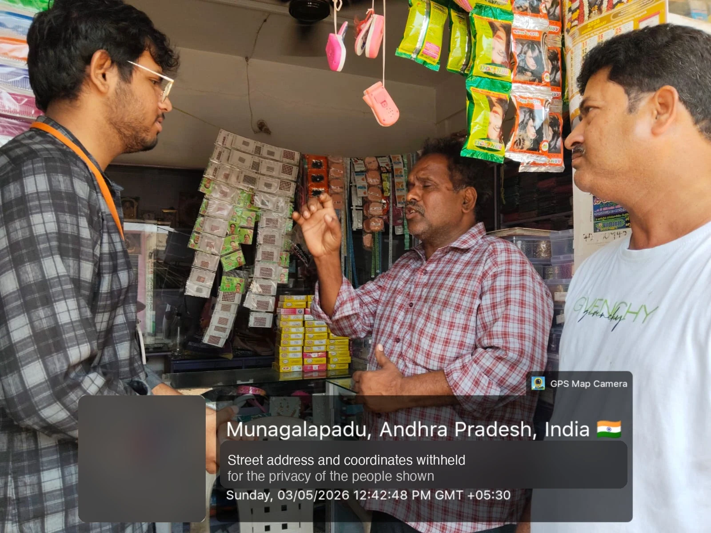
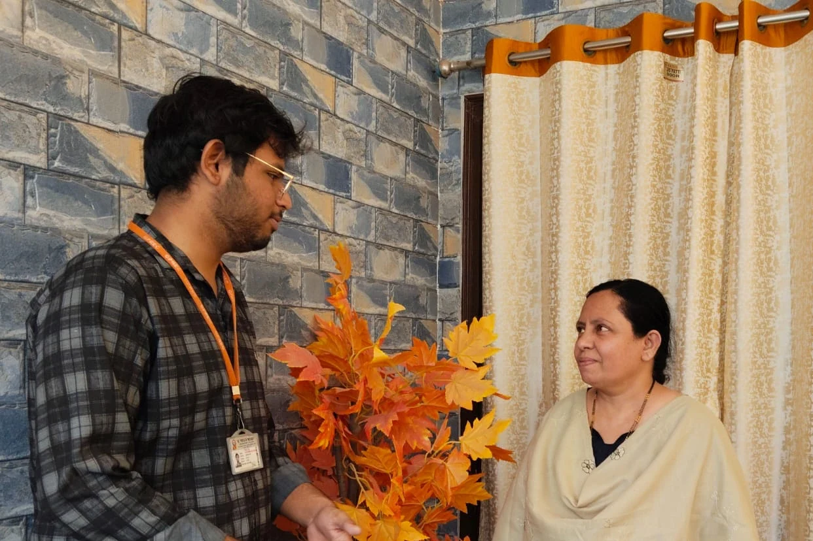

Weak passwords
What I found. Easy passwords, one password everywhere, logins shared with staff and family for convenience.
What we taught. Strong, unique passwords, never shared, with two-factor authentication switched on.
FraudShield began as my Community Service Project at G. Pulla Reddy Engineering College, Kurnool: eight weeks on foot in Balaji Nagar, house to house and shop to shop, talking about digital fraud to people who never asked. This site is what I built from what they told me.
Campaign report verified by my mentor, Sri V. Suresh, GPREC
48 consecutive days, 4 May to 20 Jun, one cell for each day in the activity log.
Counted from the activity log in my report. The report records what people did and said, not percentages or head-counts, so I print none. A number I cannot prove does not go on this page.
A website does not reach a man who never searched for it. So in Balaji Nagar, Munagalapadu, Andhra Pradesh I went to the doors, and to every shop that would let me stand at the counter. First visit: Sunday 3 May 2026.


The second photo is a home visit. I went house to house to take this to women and senior citizens, in their own homes and in their own time, because the people who most need the first-hour steps are the least likely to sit through a talk or open a website. No stage and no slides: a student at the door, and a person deciding in a few seconds whether he is worth listening to. Tap a photo to see it whole.
The project was FraudShield: A Simulation-Based Digital Fraud Immunity System. It ran from 4 May to 20 June 2026, listen first, teach second, measure last.
Researched the frauds hurting people most: phishing, OTP, UPI, QR and digital arrest. Wrote a questionnaire that collects no personal data. Printed the safety checklists. Fixed the eight-week plan.
First visits. Put the questionnaire in people's hands, asked how they pay and what they use, then analysed the answers. The gaps were phishing links, OTP sharing and fake payment methods.
First awareness sessions. Phishing, smishing and vishing in plain words, with real examples, and the warning signs: urgency, odd links, spelling errors, unknown senders.
How scammers stitch your public details into an attack. Then deepfakes and voice cloning: seeing is no longer believing. A hands-on check of what each person's own online presence gives away.
Stop and think. Keep it secret. Don't accept. Use strong passwords. Practised with two-factor authentication and real fake-support-call examples.
Don't panic. Don't delete. Tell the bank or platform. Call 1930 and report at cybercrime.gov.in. Practised until people stopped being afraid to report.
The Digital Defender idea: the people who learned it teach their neighbours. App permissions, privacy settings, and a session where the community shared the rules themselves.
Post-campaign assessment, a review meeting with community representatives, and the full report written to the college's guidelines.
People were adopting digital payments faster than they were learning to defend them. The survey and the conversations kept returning to the same five weak points.
What I found. Easy passwords, one password everywhere, logins shared with staff and family for convenience.
What we taught. Strong, unique passwords, never shared, with two-factor authentication switched on.
What I found. Fake payment messages, fake support calls, QR scams and cashback links that lean on urgency.
What we taught. A zero-trust rule: any unexpected OTP, bank detail or payment request is suspect until verified.
What I found. Shop names, phone numbers, payment QR codes and locations posted where anyone can collect them.
What we taught. Protect your private information, and audit what you have already put out.
What I found. People unsure what to do, scared of losing face or money, deleting the very messages police need.
What we taught. A calm four-step response, and the official channels: 1930 and cybercrime.gov.in.
What I found. Hard to tell a real message from a fake. Deepfakes and cloned voices were new to most people.
What we taught. Stop and verify before you answer, whoever it sounds like.
The steps that save money are free and public: call 1930, report on cybercrime.gov.in, tell your bank at once. They sit in documents written for lawyers, and a frightened person at midnight will not find them.
At the doors the hardest gap was the next step. People did not know what to do after a scam, were afraid to report it, and deleted the very messages the police need. So I took what we taught on foot and built it into a tool: the first hour, the helpline, and the exact scripts criminals run, in the order you need them.
The scam I take most seriously is the fake-officer call. A voice claims to be CBI, says your Aadhaar is tied to a case, and keeps you on a video call so you cannot think or ask anyone. It works on educated, careful people. The case on the home page is real and sourced.
G. Pulla Reddy Engineering College (Autonomous), Kurnool, established 1985, Department of CSE (AI&ML). The Community Service Project gave me the frame, the discipline and the permission to walk into a community as its student. I owe the people below more than a line on a page.
My mentor and project guide. He guided the work and verified the report this page is written from.
Head of the Department of CSE (AI&ML).
Principal.
Chairman, whose institution put my name on this work.
In the community, the Ward Education and Data Processing Secretary of Ward 39 signed my evaluation and rated the work Good. Sadhu Kousalya and Sadhu Manasa were on the project team with me. The software and this site are my build.
8 of 17 UN Sustainable Development Goals, as mapped in the college's evidence form
Every statistic lives in one data file with its source and a status. If a page disagrees with that file, the build fails. I would rather ship nothing than ship a number I cannot defend. Check them on The Data page.
The assistant never tells you a message is safe. It names the scam it resembles, quotes the exact words that gave it away, and says what to do next. I measured it on public data and it missed most of what it should catch. I published that result in the repository instead of hiding it. The fix needs real Indian messages, and collecting them is the next job.
No accounts. No analytics. Text, links, QR codes and screenshots are processed in your browser. Voice is the one exception, and only if you choose it: your browser's speech service hears the audio unless the browser can do it on the device, and the site tells you which before it listens. Pages still load fonts from Google and a few photos from Unsplash.
Not a government body. Not legal advice. The official routes are the 1930 helpline and cybercrime.gov.in.
I break my own tests on purpose to see whether they can fail. Several could not. I fixed them. The tests block a page that promises safety, a number that drifts from its source, and any page that touches your microphone before you tap.
The code, the data, the decisions and the failures are in the open repository. When I get something wrong I correct it in public, with the reason.
Every figure lists its source, so errors can be found and corrected. The code and the data are open. If I am wrong, I want to hear it before someone relies on it.